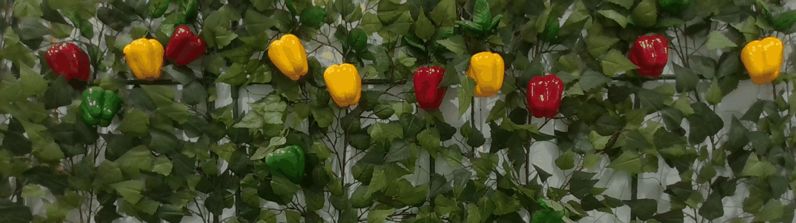
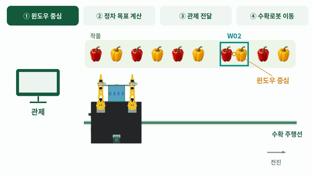
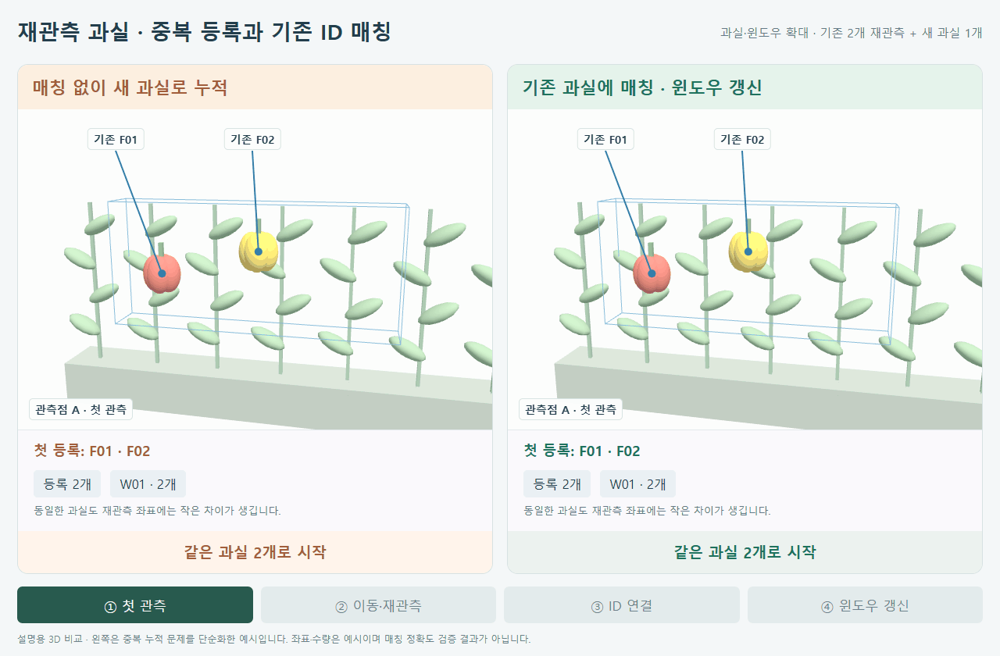

Projects / Many Farm
ROBOTICS / SMART FARM
Many Farm
다중 로봇 협업 스마트팜
예찰·수확·운송·선별을 연결하는 7인 협업 프로젝트입니다. 예찰의 주행·정지 관측·수확 작업 생성을 담당하고, 후반 운송 개발을 이어받아 경로 주행·정밀 도킹·인계·하역·복귀를 통합했습니다.
01
프로젝트 개요
- 프로젝트
- 예찰·수확·운송·선별 협업 시스템
- 개발 인원
- 7명 · 팀 프로젝트
- 담당 역할
- 예찰 관측·작업 생성, 후반 운송 주행·도킹·인계 통합
- 기여 범위
- 관측을 작업 영역·정차 위치로 변환하고 이동·장치 동작 연결
- 공동 설계
- 초기 수확 로봇 요구사항·FSM·구성요소 설계
- 팀 구현
- 인식 모델 학습, 수확팔·기구, 관제, 선별 및 시뮬레이션
개발 배경과 목표
과실을 찾는 것에서 끝나지 않고, 수확 로봇이 어디에서 작업하고 운송 로봇이 언제 접근할지 연결해야 했습니다. 여러 로봇이 각자의 역할과 완료 조건에 따라 작업을 이어가도록 구성했습니다.
담당 범위
예찰의 주행·정지 관측·작업 생성을 담당했습니다. 운송은 초기 개발 이후 주행·도킹·인계 통합을 이어받아 목적지 접근부터 배출·복귀까지 연결했습니다.
관제 · 작업 요청과 상태 연결팀 담당 / 각 로봇의 요청·진행·결과 연동
예찰직접 담당
정지 관측
작업 영역·정차점 생성
수확팀 담당 · 초기 설계 공동 참여
대상 재인식
팔 동작·수확
운송후반 통합 담당
주행·도킹
인계·배출·복귀
선별팀 담당
과실 인식
색상별 분류
진한 테두리: 개인 담당 영역. 실제 요청과 상태는 관제를 통해 연결됩니다.
초기 수확 로봇의 요구사항·FSM·구성요소 설계에 공동 참여했으며, 운송은 초기 개발 이후 주행·도킹·인계 통합을 이어받았습니다. 인식 모델 학습, 로봇팔·기구 설계, 관제 및 선별 시스템은 팀원들과 역할을 나누어 개발했습니다.
전체 시스템 아키텍처
 웹 관제 · ROS 2 공통 인터페이스 · 실물·시뮬레이션
웹 관제 · ROS 2 공통 인터페이스 · 실물·시뮬레이션02
예찰 · 관측을 수확 작업으로
정지 관측 결과를 누적해 작업 윈도우와 수확로봇 정차점을 생성했습니다.
구현 · 경로 주행 → 정지 관측 → 윈도우·정차점 생성 → 복귀
 실물 예찰 영상 · 윈도우와 흰선 정차점은 관측 타이밍에 맞춘 설명 오버레이
실물 예찰 영상 · 윈도우와 흰선 정차점은 관측 타이밍에 맞춘 설명 오버레이
저장된 카메라 관측 이미지 관측 과실을 묶은 작업 윈도우 결과
관측 과실을 묶은 작업 윈도우 결과- GeoJSON 경로 이동
- 관측점 정차·방향 정렬
- RGB-D·자세 확보
- 관측 결과 누적
- 작업 결과 전달
과실 위치 ≠ 수확로봇의 정차 위치팔 장착 오프셋을 반영해 주행선 위 정차점을 계산합니다. 수확로봇은 도착 후 과실을 다시 인식합니다.

윈도우 중심 → 정차 목표 계산 → 관제 전달 → 수확로봇 이동 · 동작 원리를 설명하는 애니메이션
Vision 팀의 인식 결과를 활용해 관측 실행·작업 생성 로직을 구현했습니다.
03
운송 · 주행부터 도킹·인계까지
후반 운송 개발을 이어받아 목적지 접근·도킹·인계·하역·복귀를 연결했습니다.
구현 · 경로 주행 → 정밀 도킹 → 인계·하역 → 복귀
마커·LiDAR 정밀 도킹
MARKER × LiDAR
폼보드로 넓힌 기준면을 마커·LiDAR로 추적합니다.
 실물 배치 · 왼쪽 운송로봇, 오른쪽 수확로봇과 전면 마커
실물 배치 · 왼쪽 운송로봇, 오른쪽 수확로봇과 전면 마커 PPT 설명 애니메이션 · 마커와 LiDAR 기준면을 연결해 저속 접근
PPT 설명 애니메이션 · 마커와 LiDAR 기준면을 연결해 저속 접근02 · LiDAR폼보드로 넓힌 면의 거리 확인
03 · 도킹 제어같은 면을 추적하며 접근·정지
준비·인계 완료를 확인하는 FSM
- 1차 접근
- 수확 측 준비 대기
- 최종 도킹·덮개 열기
- 인계 완료 대기
- 덮개 닫기·이격
관제의 요청·완료 이벤트와 팀원이 구현한 덮개·하역 서비스를 운송 실행부에 연결했습니다.
3D 공정 재생
공정 순서 설명용 · 실제 로봇·물리 검증과 구분
04
검증 결과와 확인 범위
실물 동작과 코드에서 확인한 범위를 정리했습니다.
| 항목 | 확인한 내용 | 추가 검증 |
|---|
| 예찰 주행·관측 | 실제 장비에서 관측점 이동과 정지 관측 흐름 확인 | 환경 변화에 따른 반복 수행 |
| 작업 생성 | 관측 누적, 윈도우 배정과 정차점 계산 구현 | 절대 위치 오차, ID 연결 정확도, 실제 팔 도달성 |
| 운송 도킹·장치 연동 | 단계별 접근·인계 제어 구현과 개별 실물 시험 기록 | 동일 조건의 반복 성공률과 연속 작업 |
| 시스템 평가 | 팀 시뮬레이션의 누락·중복·잔류 사례 분석 | 실물 통합 조건과의 차이 확인 |
05
문제 해결 · 센서 기준과 실행 상태
해결한 문제 · 도킹 기준면과 누적 관측의 일관성
01MARKER · LiDAR · DOCKING
바퀴·기둥 반사로 달라지는 도킹 거리
 폼보드 부착 전·후 · 바퀴·기둥 반사와 확장 기준면 추적 비교
폼보드 부착 전·후 · 바퀴·기둥 반사와 확장 기준면 추적 비교01문제
LiDAR 높이는 고정돼 있지만, 접근하면서 수확로봇의 바퀴나 기둥이 반사 대상으로 잡혔습니다. 마커로 도킹 대상을 찾더라도 실제 거리 측정의 기준면이 일정하지 않아 접근 기준이 달라졌습니다.
02해결 방안
핵심은 거리값 하나를 보정하는 것보다 접근하는 동안 계속 관측할 수 있는 면을 만드는 것이었습니다. 바퀴·기둥처럼 깊이가 다른 구조물 대신, LiDAR가 보는 높이에 연속된 기준면을 확보하는 방향으로 해결했습니다.
- 수확로봇에 작은 폼보드를 부착해 LiDAR가 관측할 기준면을 넓혔습니다.
- 마커로 도킹 대상을 확인하고, 확장한 기준면을 거리 추적 대상으로 연결했습니다.
- 접근 중 같은 면을 계속 추적하면서 도킹하도록 구성했습니다.
03 해결 결과
폼보드 부착과 기준면 추적을 결합해 해당 도킹 문제를 해결했습니다. 반복 위치·방향 오차의 정량 평가는 별도 과제로 남겼습니다.

같은 과실 재관측 · 중복 등록과 기존 ID 매칭·윈도우 갱신 비교01문제
다른 관측점에서 같은 과실을 다시 봤을 때 좌표 차이로 새 ID가 생기거나 기존 윈도우 소속이 달라졌습니다. 관측 결과를 그대로 누적하면 실제 과실 수와 작업 후보가 어긋날 수 있었습니다.
02해결 방안
같은 과실인지 판단하는 단계와 어느 윈도우에 넣을지 판단하는 단계를 분리했습니다. 새 관측을 기존 과실에 먼저 연결하고, 누적 관측으로 대표 위치를 갱신한 다음 윈도우 소속을 다시 판단하도록 구성했습니다.
- 거리 기준 안의 후보를 비교해 기존 과실과 일대일 매칭하고, 대응이 없을 때만 새 ID를 등록했습니다.
- 매칭된 과실의 관측 이력을 누적하고 중앙값으로 대표 위치를 갱신했습니다.
- 바뀐 대표 위치로 기존 윈도우의 소속을 재검토하고, 창 재사용과 겹침 조정을 연결했습니다.
03 해결 결과
기존 ID를 유지하며 누적 관측과 작업 배정을 갱신하는 흐름을 구현했습니다. 모든 중복·누락이 제거된 것은 아니며, 실제 과실 대응률은 추가 검증이 필요합니다.
06
회고
01 · 예찰관측 결과를 다음 로봇의 작업 기준으로 바꾸기
과실의 좌표만으로는 수확로봇이 어디에 서야 할지 정할 수 없었습니다. 작업 윈도우와 팔 장착 오프셋, 주행선을 함께 다루며 인식 결과와 실제 작업 목표를 분리해 설계하는 법을 배웠습니다.
02 · 운송 통합센서가 볼 수 있는 기준면부터 만들기
LiDAR 높이는 고정돼 있어도 접근하면서 바퀴·기둥 등 반사 부위가 바뀌어 도킹 거리 기준이 달라졌습니다. 폼보드를 붙여 면을 넓히고 그 면을 추적하도록 해결하면서, 제어 로직뿐 아니라 센서가 실제로 보는 높이와 구조물 형상까지 함께 설계해야 한다는 점을 배웠습니다.
03 · 남은 과제동작 시연을 반복 측정으로 이어가기
미션 완료만으로 과실 ID의 일관성이나 정차 정확도를 판단할 수는 없었습니다. 다음에는 동일 과실의 재관측 대응률, 수확 정차 오차, 도킹 위치·방향 편차를 같은 조건에서 반복 측정해 개선 우선순위를 정하고 싶습니다.
다음 프로젝트POCO ↗